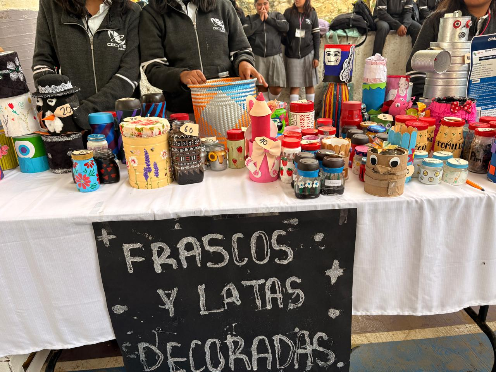
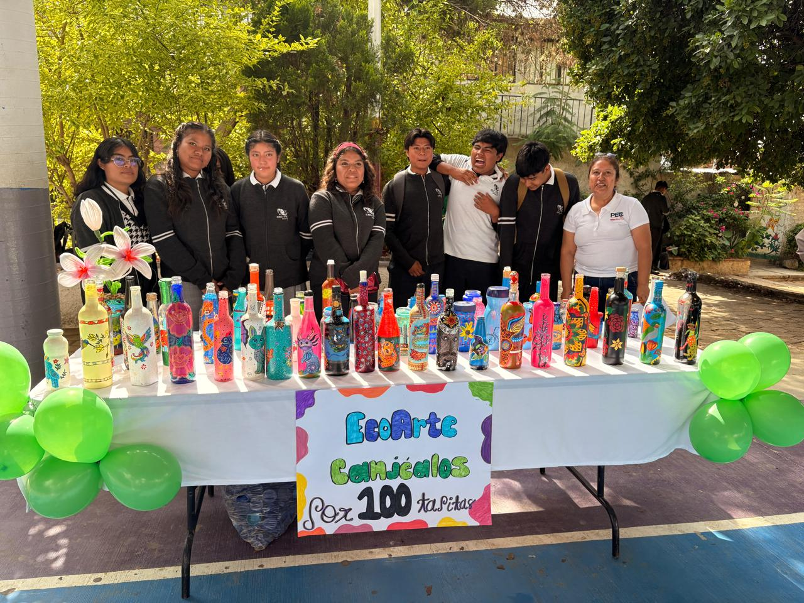
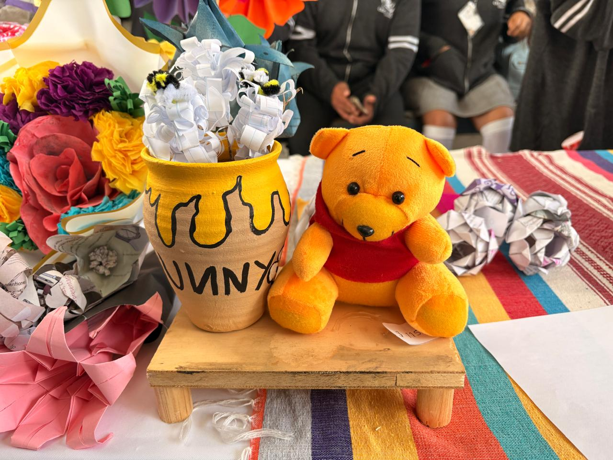

Bióloga Carolina Romo Díaz
Libros con papel reciclado
Los estudiantes reutilizaron papel para elaborar hojas recicladas y crear libros artesanales, promoviendo el cuidado de los recursos naturales.
Flores con Papel Reciclado
La Bióloga Carolina Romo Díaz también coordinó la elaboración de flores decorativas utilizando papel reciclado. Los estudiantes reutilizaron papel que ya no tenía uso para transformarlo en manualidades creativas y coloridas.
Esta actividad permitió desarrollar la creatividad, las habilidades manuales y la conciencia ambiental, demostrando que materiales reciclables pueden convertirse en objetos decorativos con gran valor artístico.
Arqui. Cuauhtémoc Reyes Flores
Recolección de botellas de vidrio
Se reunieron botellas de vidrio para evitar que terminaran como residuos contaminantes.
Lic. Isis Jerónimo Ángeles
Botellas estilo alebrijes
Las botellas recolectadas fueron decoradas con diseños inspirados en los alebrijes mexicanos, mezclando reciclaje y arte.


